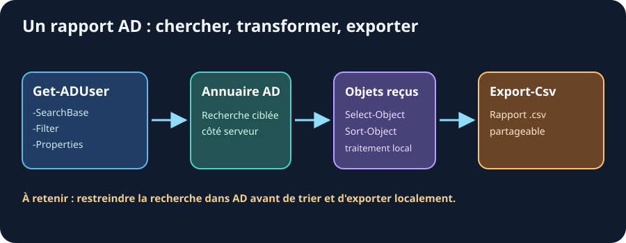

31. Recherche et rapports AD
Ressources du chapitre - Exercices pratiques - Mémo des commandes
Le paramètre -Filter
-Filter est le moteur de recherche des cmdlets AD.
# Syntaxe : chaîne de texte (pas du PowerShell standard !)
Get-ADUser -Filter "Department -eq 'Cipher Pol'"
Get-ADUser -Filter "Enabled -eq $true"
Get-ADUser -Filter "Name -like 'L*'"
# Combiner les conditions
Get-ADUser -Filter "Department -eq 'CP-9' -and Enabled -eq $true"
Get-ADUser -Filter "Title -eq 'Agent' -or Title -eq 'Agent Spécial'"
Attention : La syntaxe du
-FilterAD n'est pas du PowerShell classique. C'est un mini-langage spécifique. Les guillemets simples pour les valeurs texte.
Accéder aux propriétés supplémentaires
Par défaut, Get-ADUser retourne seulement les propriétés de base. Pour les autres, il faut les demander explicitement :
# Propriétés disponibles mais non retournées par défaut
Get-ADUser "rlucci" -Properties LastLogonDate, PasswordLastSet, PasswordNeverExpires, `
LockedOut, BadLogonCount, Department, Title, EmailAddress
# Toutes les propriétés (usage ponctuel, lent sur un grand annuaire)
Get-ADUser "rlucci" -Properties *
Rechercher dans une OU précise
# SearchBase : point de départ de la recherche
Get-ADUser -Filter * -SearchBase "OU=Agents,DC=cipher-pol,DC=org"
# SearchScope : profondeur de recherche
# Base = l'objet lui-même uniquement
# OneLevel = enfants directs seulement
# Subtree = tous les descendants (par défaut)
Get-ADUser -Filter * -SearchBase "OU=Cipher-Pol,DC=cipher-pol,DC=org" `
-SearchScope "OneLevel"
Search-ADAccount : comptes en anomalie
# Comptes bloqués (trop de mauvais mots de passe)
Search-ADAccount -LockedOut
# Comptes dont le mot de passe est expiré
Search-ADAccount -PasswordExpired
# Comptes inactifs depuis 90 jours
Search-ADAccount -AccountInactive -TimeSpan (New-TimeSpan -Days 90)
# Comptes désactivés
Search-ADAccount -AccountDisabled
Construire des rapports

-SearchBase, -Filter et -Properties limitent
ou précisent la recherche auprès de l'annuaire. Select-Object et
Sort-Object travaillent ensuite sur les objets reçus ;
Export-Csv écrit enfin le rapport.
Rapport : tous les utilisateurs avec leur département
Get-ADUser -Filter * -Properties Department, Title, EmailAddress, Enabled |
Select-Object Name, SamAccountName, Department, Title, EmailAddress, Enabled |
Sort-Object Department, Name |
Format-Table -AutoSize
Rapport : utilisateurs inactifs depuis 60 jours
# La bonne méthode : Search-ADAccount fait le calcul pour vous
Search-ADAccount -AccountInactive -TimeSpan (New-TimeSpan -Days 60) -UsersOnly |
Get-ADUser -Properties LastLogonDate, Department |
Select-Object Name, SamAccountName, Department, LastLogonDate |
Sort-Object LastLogonDate |
Format-Table -AutoSize
LastLogonDatene fonctionne PAS dans-FilterOn serait tenté d'écrire ceci — c'est une erreur classique :
powershell $il60jours = (Get-Date).AddDays(-60) Get-ADUser -Filter "LastLogonDate -lt '$il60jours'" # NE MARCHE PASDeux problèmes se cumulent :
LastLogonDateest une propriété construite par le module ActiveDirectory. Elle est calculée côté client à partir de l'attribut LDAPlastLogonTimestamp, donc l'annuaire ne la connaît pas et ne peut pas filtrer dessus.- La date est interpolée dans une chaîne, donc son format dépend de la culture du poste :
15/01/2026en français,01/15/2026en anglais. Le même script donne des résultats différents selon la machine.Si vous tenez à filtrer côté annuaire, utilisez l'attribut LDAP brut et un
FileTime, ce qui est nettement moins lisible :
powershell $seuil = (Get-Date).AddDays(-60).ToFileTime() Get-ADUser -Filter "LastLogonTimeStamp -lt $seuil" -Properties LastLogonTimeStampDans la vraie vie : préférez
Search-ADAccount -AccountInactive.
Rapport : comptes sans mot de passe expirant
Get-ADUser -Filter "PasswordNeverExpires -eq $true" `
-Properties PasswordNeverExpires, Department |
Select-Object Name, SamAccountName, Department |
Export-Csv "C:\Temp\comptes-mdp-permanent.csv" -NoTypeInformation -Encoding UTF8
Rapport : membres de tous les groupes
Get-ADGroup -Filter * |
ForEach-Object {
$groupe = $_
Get-ADGroupMember -Identity $groupe.Name -ErrorAction SilentlyContinue |
Select-Object Name, SamAccountName,
@{Name="Groupe"; Expression={$groupe.Name}}
} |
Export-Csv "C:\Temp\membres-groupes.csv" -NoTypeInformation -Encoding UTF8
Tableau de bord : vue d'ensemble du domaine
function Get-TableauBordAD {
$totalUtilisateurs = (Get-ADUser -Filter *).Count
$actifs = (Get-ADUser -Filter "Enabled -eq $true").Count
$desactives = (Get-ADUser -Filter "Enabled -eq $false").Count
$bloques = (Search-ADAccount -LockedOut).Count
$totalGroupes = (Get-ADGroup -Filter *).Count
$totalOrdinateurs = (Get-ADComputer -Filter *).Count
[PSCustomObject]@{
Utilisateurs_Total = $totalUtilisateurs
Comptes_Actifs = $actifs
Comptes_Desactives = $desactives
Comptes_Bloques = $bloques
Groupes = $totalGroupes
Ordinateurs = $totalOrdinateurs
}
}
Get-TableauBordAD | Format-List
À retenir
-
✅
-FilterAD a sa propre syntaxe (guillemets simples pour les valeurs texte) - ✅
-Propertiespour demander les attributs supplémentaires - ✅
-SearchBasepour cibler une OU précise -
✅
Search-ADAccountpour trouver les comptes en anomalie (bloqués, expirés…) -
✅ Combiné à
Export-Csv, on génère des rapports professionnels facilement
Lien - Search-ADAccount